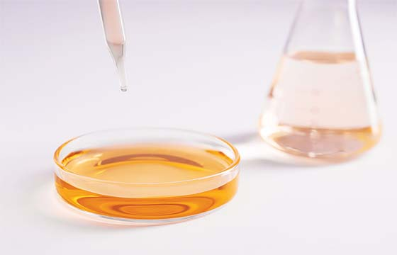

> 사업영역>
염소 계열
다양한 산업부문에 사용되는‘염소 계열’
염소계열 제품에는 건축, 산업, 섬유, 의약과 같이 광범위한 산업분야에 널리 사용되는 제품군으로 증설과 신시장 창출, 원가절감을 통해 국내외 시장에서 경쟁력을 확보하고 있습니다.
가성소다
가성소다는 비누, 제지, 펄프, 섬유, 염료, 의약품, 식품, 전기 등 모든 분야에 걸쳐 널리 사용됩니다. 특히 인조섬유 및 화학약품의 원료로 가장 많이 사용됩니다.
MSDS 다운로드 아이콘PDF 다운로드염산
수소와 염소로부터 직접 합성됩니다. 화학공업에서 강산으로서 중요한 물질입니다. 가장 소비량이 큰 용도는 글루탐산나트륨·간장 등 아미노산 조미료의 제조입니다.
 MSDS 다운로드 아이콘PDF 다운로드ECH
에폭시, 합성글리세린, 특수고무의 중간 원료로서 지력증강제, 계면활성제, 의약품, 용매용제 등에 사용됩니다. 염소와 프로필렌을 반응시켜 만드는 무색유상의 액체로, 에폭시수지 원료, 지력 증강제에 사용됩니다.
MSDS 다운로드 아이콘PDF 다운로드